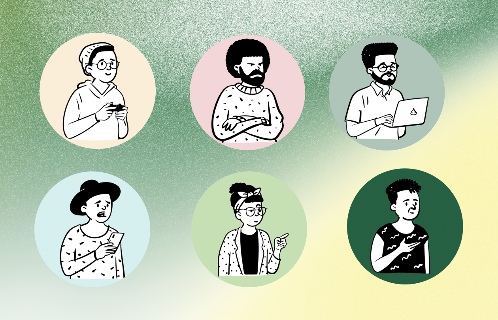
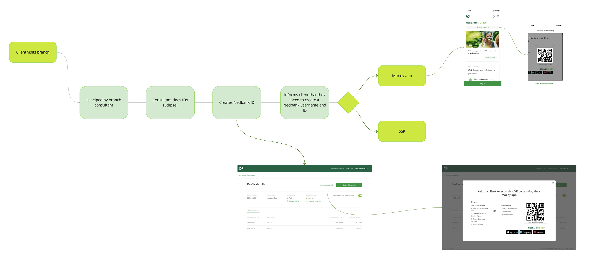
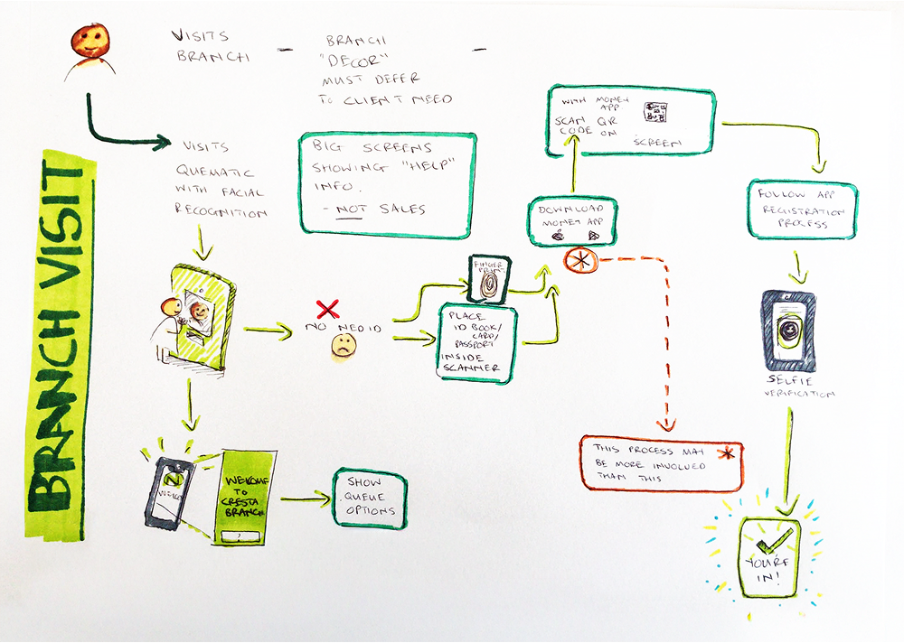
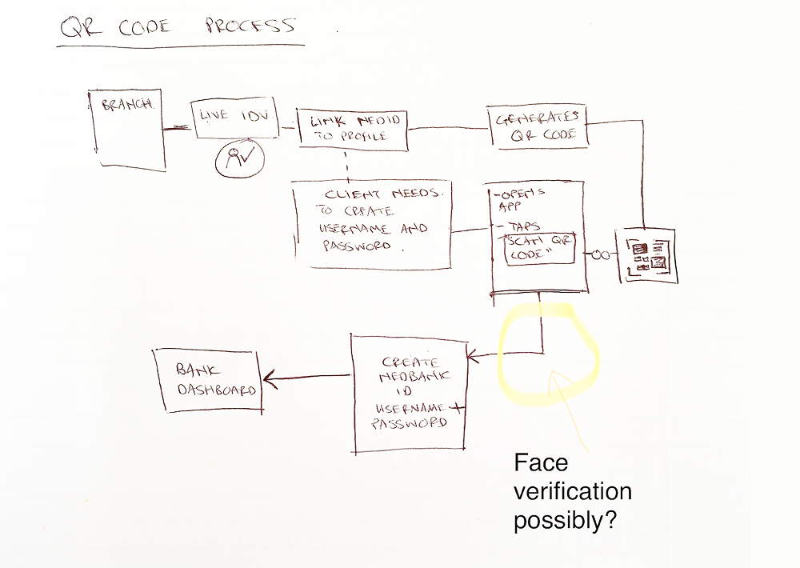
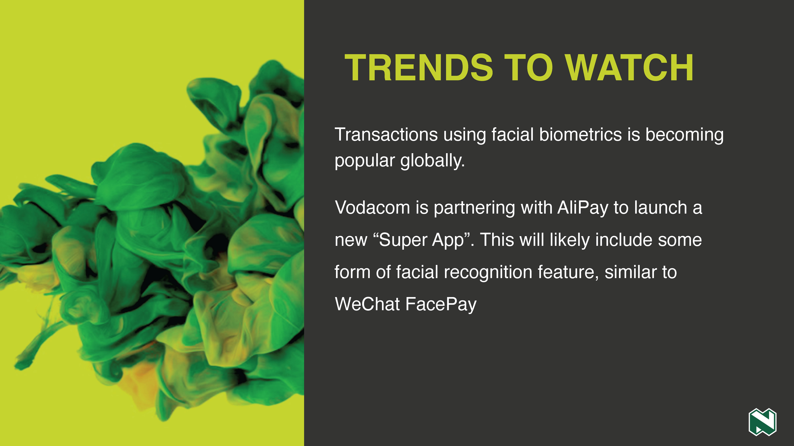
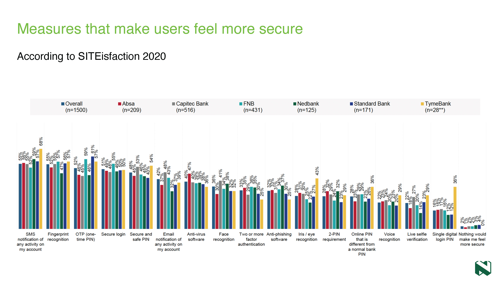
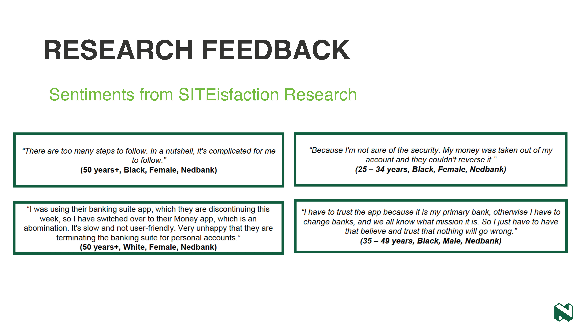
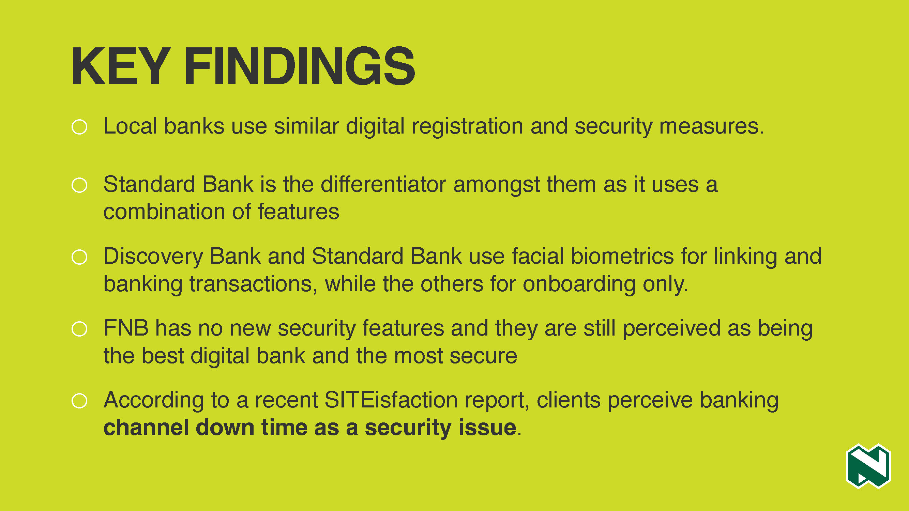
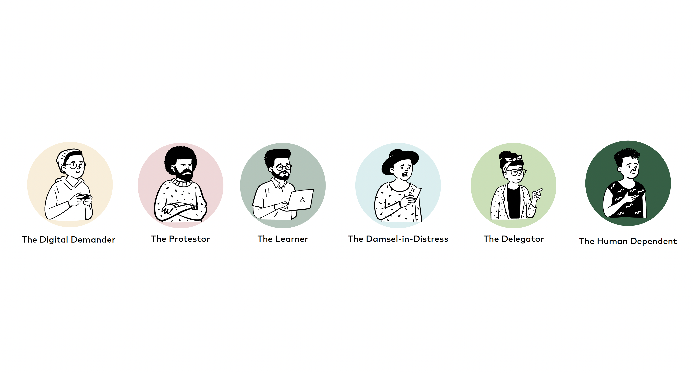
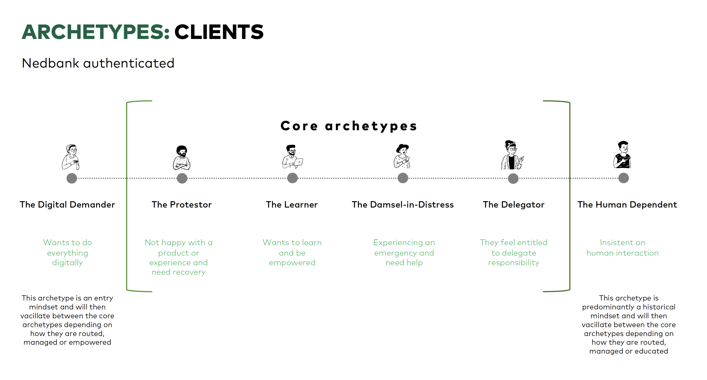

Overview
My strategy was to go straight to the source. I needed to understand the real-world experiences of both our customers and banking staff to design a consistent, seamless onboarding journey across all channels.
This wasn’t a solo mission. I collaborated closely with a dedicated team, including a design lead and a product owner, analyzing operational gaps and emotional roadblocks that customers encountered during the onboarding process.

Journey Mapping & User Flows
I created comprehensive user flows that visually captured the convoluted paths customers were forced to take. These maps served to align business stakeholder groups and highlighted the friction between remote digital actions and physical branch visits.



Qualitative Research
My research led to reports that distilled the core frustrations of both customers and staff. We learned that the lack of clear, real-time feedback during digital sign-ups caused customers to abandon flows and visit branches, overloading local staff and increasing processing costs.




Customer Archetype Design
A key contribution of mine was rethinking our approach to personas. Given Nedbank’s vast and diverse customer base, traditional static personas fell short. We designed dynamic customer archetypes based on digital literacy and onboarding intent, allowing product teams to tailor application interfaces to real-world behaviors.


The Impact
My research reports and the dynamic archetypes we developed were actively adopted by various design and product teams to inform and guide their digital onboarding strategies. By highlighting the real-world struggles, this work drove a customer-first approach that helped shape a frictionless banking registration experience.